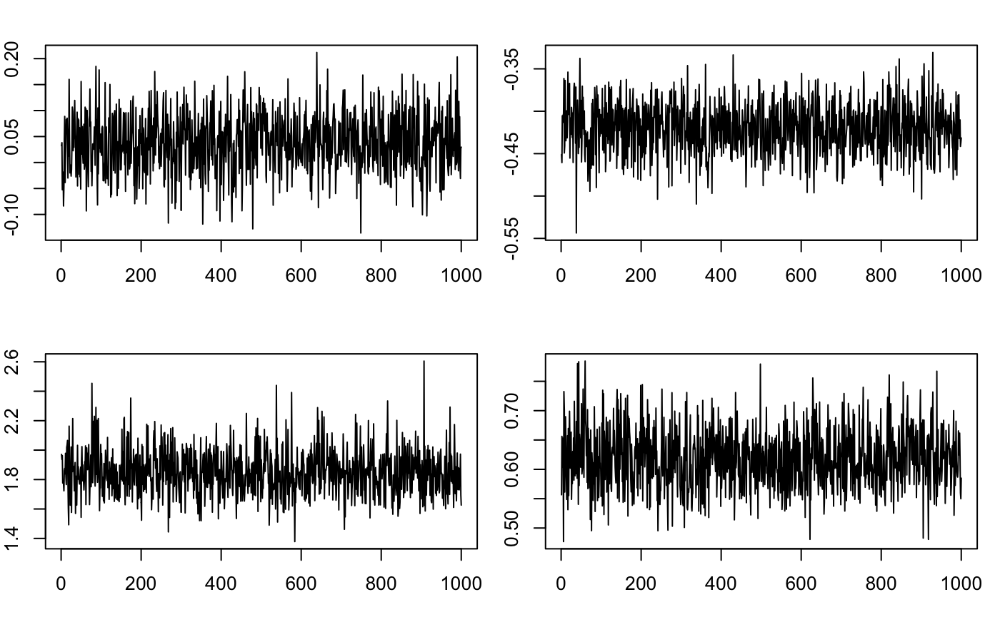
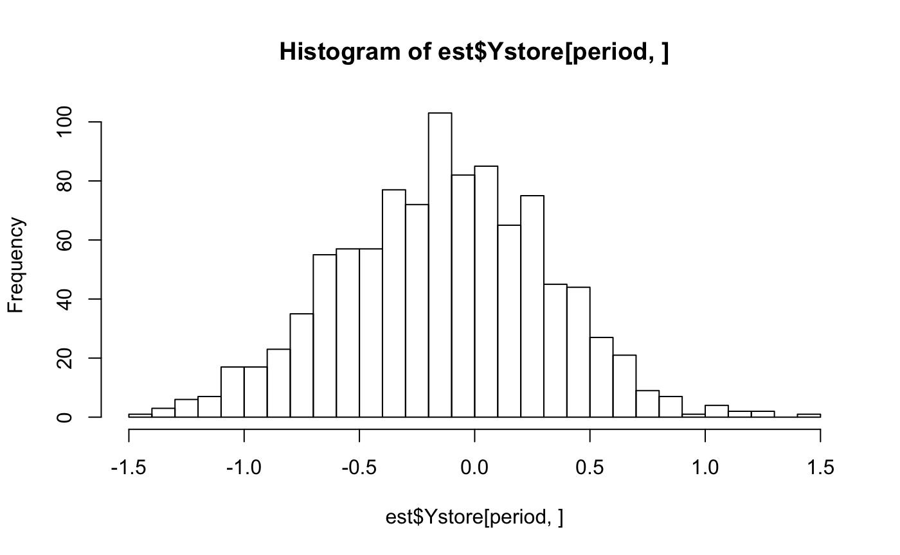

Bayesian Dynamic Factor Models
Seth Leonard, Christoph Sax
2018-12-13
dfm.Rmdbdfm is an R package for estimating dynamic factor models. The emphasis of the package is on fully Bayesian estimation using MCMC methods via Durbin and Koopman’s (2012) disturbance smoother. However, maximum likelihood estimation via Watson and Engle’s (1983) EM algorithm and two step estimation following Doz, Giannone, and Reichlin (2011) is also supported. This document begins with a non-technical overview of dynamic factor models including simple examples. The second section introduces more rigorous notation and technical details regarding estimation techniques. For even more detail the book Practical Implementation of Factor Models is available for free download at [SRLquantitative.com]{srlquantitative.com}.
Non-Technichal Overview
Time series data for real world applications can be messy. Potential difficulties include inaccurate (noisy) observations, missing data, “ragged edge” data due to varying start and end dates for different series, and a potentially large number of parameters to estimate. Dynamic factor models (DFMs) or state space models provide a means of addressing these big data problems.
We can describe dynamic factor modes in two parts. The first part is called the measurement or observation equation. Mathematically, we can write this equation as \[ y_t = H x_t + \varepsilon_t \] Conceptually, this step relates our meaningful information or factors, represented by the vector \(x_t\), to our large set of noisy data, represented by \(y_t\). The second part of the model is called the transition equation, which we can write mathematically as \[ x_t = A x_{t-1} + \epsilon_t \] This part of the model describes how our factors \(x_t\), the meaningful information in which we are interested, evolve over time. The Kalman filter, the work horse of the linear-Gaussian model, operates by first predicting \(x_t\) based on \(x_{t-1}\) (the model here is written in terms of one lag but is easily extended to \(p\) lags). Predictions for \(x_t\) are then updated using data in \(y_t\) as it becomes available. Data need not be realized at the same time; as soon as any additional information becomes available it can be incorporated into the model.
In economic and financial applications the greatest difficulty in implementing factor models is parameter estimation (in many physical models parameters may be informed by theory and thus need not be estimated). The package bdfm supports three methods for estimating these models. Bayesian estimation (method = 'Bayesian') is the default; this approach is able to incorporate prior beliefs we have about the data — which series are more important for example — and thus may yield superior predictions. Maximum likelihood estimation (method = 'ML') finds the parameters maximize the log likelihood of what we observe yielding results that are nearly identical to Bayesian estimation when we do not specify any prior beliefs about the model. Finally, “two step” estimation (method = 'PC') is useful when we have very large data sets (hundreds or thousands of series) without too many missing observations. When the number of observed series gets very large Bayesian and maximum likelihood estimation can be slow. Two step estimation, however, remains quick and computationally light by estimating parameters using principal components as factors.
Getting Started
Basic Estimation
Input data, \(y_t\) in the observation equation, is the only minimum requirement to estimate a DFM using the bdfm package. However, it is helpful to have an idea of where to start in terms of the number of lags in the transition equation and number of factors you would like to estimate. If you’re using monthly data, 3 lags (one quarter) is a decent starting point. For daily data, 7 lags (one week, or 5 if data includes only business days) is probably a good guess. The defaults are (somewhat arbitrarily) one factor and two lags. Note that input data should be stationary. It can also be helpful to scale data and to ensure values are not too small; the Kalman filter requires inverting the covariance matrix for estimates of observations. If observed values are small the determinant of this matrix can get very small (close to machine precision) impacting the accuracy of the results. As a simple example, we can estimate a DFM using five series from the St. Louis Fed’s Fred database. To begin with, we import the data and enforce stationary by taking logs and differences where needed.
library(BDFM)
library(tsbox)
fred0 <- read.csv(system.file("Examples/freddata.csv", package = "BDFM"), stringsAsFactors = FALSE)
data <- ts_ts(ts_long(fred0)) # ts-time series## [time]: 'DATE'
## [time]: 'DATE'#Make the data stationary by taking log differences. Note that we do not take logs of inventory:sales ratios (indexes 3 and 4), but we do difference them as they are not stationary.
data[,c(1,2,5)] <- log(data[,c(1,2,5)])
data <- diff(data)As previously mentioned, small values can result in inaccurate estimations. It’s therefore a good idea to scale up the data.
[TODO: The package should take care of technical stuff, not the user. If scaling is a good idea, we should do it by default, and unscale at the end. With an option to turn it of]
We can then estimate our DFM. A model with one factor is a good way to create an index of the data, in this case a small index of monthly real activity in the U.S.
[TODO: heuristics for factors, lags?]
And finally, we can look a this index against the observed series.

Forecasts
To generate forecasts using bdfm the user can specify the number of periods ahead to forecast using the forecast argument. Keep in mind that the last observation may not be the same for every series when dealing with “ragged edge” data; forecast = n will generate forecasts \(n\) periods ahead of the latest observation of any series in our data set. Also, though we have been inputing data in matrix format above, it may be helpful to use a time series format when forecasting that will keep track of forecast dates. Sticking with our five variable monthly frequency example from FRED, we can generate forecasts for three months beyond our last observation of initial unemployment claims, which is in the case our last observation, as follows.
est_fct <- dfm(data, factors = 2, lags = 3, forecast = 3)
fct <- predict(est_fct)[,"INDPRO"]
print(tail(fct,4))## [1] -0.31498896 0.02286125 -0.08580187 -0.01756807Note that the value for November 2018 is also a prediction before IP was observed; in this case it is a nowcast using initial jobless claims to update the one step ahead forecast.
Working with Bayesian DFMs
Our dynamic factor model can be described by the observation equation \[ y_t = H x_t + \varepsilon_t \] the transition equation \[ z_t = A z_{t-1} + \epsilon_t \] where \(z_t = \begin{bmatrix} x_t & x_{t-1} & \ldots & x_{t-p+1} \end{bmatrix}\) and \(A\) is the companion form of \(B\) in the vector autoregression (VAR) \[x_t = B \begin{bmatrix}
x_{t-1} \\
x_{t-2} \\
\vdots \\
x_{t-p}
\end{bmatrix} + \epsilon_t \] and the distribution of shocks \[
\begin{bmatrix}
\epsilon_t\\
\varepsilon_t
\end{bmatrix}
\sim \mathcal{N}\left( \begin{bmatrix} 0\\ 0 \end{bmatrix}, \begin{bmatrix} Q & 0 \\ 0 & R \end{bmatrix} \right)
\] Our goal is therefore to estimate the parameters \(B\), \(H\), \(Q\), and \(R\). The default Bayesian estimation routine does this by sequentially drawing factors given parameters using Durban and Koopman’s (2012) disturbance/simulation smoother and then drawing parameters given factors. We accept draws with probability 1, that is, bdfm performs these iterations via Gibbs sampling. The model is normalized by setting the top \(m \times m\) submatrix of \(H\) to the identity matrix where \(m\) is the number of factors. This involves drawing the first \(m\) rows of \(H\) from the appropriate posterior distribution and then using this draw to rotate factors to meet our normalization criteria. By default, the model is normalized on the first \(m\) principal components of the data; you can set identification = "Name" to normalize on the first \(m\) observed series.
Note that because Bayesian models are estimated by simulation, results will not always be identical. bdfm does not currently support setting the random number generator seed in the C++ functions, though this is a feature we are working on.
Including Informative Priors
An important question with any dynamic factor model is how much each observed series contributes to factors. To answer this question we can look at the estimated parameters of the transition equation. Going back to the simple model we estimated above using 5 series from Fred, the loadings \(H\) are stored as est$H, and are
## [,1]
## [1,] -0.4193140
## [2,] -0.5118999
## [3,] 0.4560990
## [4,] 0.5319027
## [5,] 0.2673007Industrial production and new orders (the first two series) load negatively; inventory sales ratios and jobless claims load positively. Note that we could multiply \(H\) and the factors by \(-1\) and the model would be unchanged. Perhaps more importantly, the variances of shocks to the observation equation tell us how well the model fits each observed series. These are stored as diag(est$R) and are
## [1] 0.6121933 0.4163360 0.5454893 0.3437043 0.8471460Since we have normalized the variance of each series to 10000, this gives us a good idea of how much each series contributes to factor updates. If the estimated variance of shocks to a series was near 10000, that series would contribute nothing or very little to our model. In this case, every series contributes to our updates, though initial jobless claims contributes the least.
A great advantage of fully Bayesian DFM estimation is that it allows us to incorporate prior beliefs into parameter estimates. Suppose, for example, that we wanted a model in which initial jobless claims played a bigger role. We can accomplish this by incorporating the prior belief that shocks to initial jobless claims in the transition equation are small. We can specify this prior using the “degrees of freedom” for the inverse gamma prior distribution for \(R_{5,5}\), the variance of shocks to the observed series initial jobless claims. We can specify this prior using nu_r = c(0,0,0,0,1) and then estimate the model as
## [1] 0.6125790 0.4203156 0.5478774 0.3465777 0.4183921Estimated shocks to the transition equation are now smaller implying jobless claims will play a bigger role in updating our factor.
Checking Convergence
Parameters for Bayesian DFMs estimated using the bdfm package are median values of the entire posterior distribution of draws. By default bdfm uses 500 burn in iterations and 1000 sampling iterations. However, 500 burn in iterations may not be sufficient. The best way to evaluate whether our model has converged to a stationary distribution is to look at the trace for estimated parameters. Parameter posterior distributions are stored as Bstore, Hstore, Qstore, and Rstore. The first three are cubes. Bstore, for example, has dimensions [m, m*p, reps]. For the first model we estimated,
est <- dfm(data, factors = 1, lags = 3)we can look at a few trace plots using the following:
#Look at traces for a few of the parameters in our first estimation
par(mfrow=c(2,2))
saved_par <- par("mar") #this is just for knitting the document
par(mar = c(3,2,2,1)) #this is just for knitting the document
ts.plot(est$Bstore[1,1,])
ts.plot(est$Hstore[1,1,])
ts.plot(est$Qstore[1,1,])
ts.plot(est$Rstore[1,])
While this is not a formal test, things here look pretty good, so there is probably no need to change the defaults.
Full Posterior Distributions of Predicted Values
If we are using a dynamic factor model to predict a certain variable, such as a nowcast of industrial production, it is far better to use the full distribution of predicted values for our series of interest. The full posterior distribution is of course interesting in its own right, but it will also tend to be more accurate then predicted values estimated using posterior medians for parameters. This is due to the fact that the posterior median for predicted values of a series is more robust to non-stationary parameter draws and under identification. However, the full distribution of fitted or predicted values can be very large. In the current example with 5 observed series, 322 observations, and 1000 draws, storing the distribution of every series would require storing 1.6 million elements. For bigger data sets, obviously this number would increase. Therefore the package bdfm will store posterior distributions for only one series of interest, specified by setting the input store_idx to the index value of the series of interest. By default, store_idx = NULL and no posterior distributions of observables are stored. We can store the distribution of predicted scaled and centered industrial production (the first series in our data set) by re-estimating the model as follows:
est <- dfm(data, factors = 1, lags = 3, store_idx = 1)
median_parameters <- mean((est$values[,1] - data[,1])^2, na.rm = T)
median_draw <- mean((est$Ymedian[,1] - data[,1])^2, na.rm = T)
cat("MSE for estimate using median parameters:", median_parameters, "\n")## MSE for estimate using median parameters: 0.6711137## MSE for estimate using median of draws for IP: 0.5999534In this case the mean squared error for predicted values using the median value of draws for industrial production in our MCMC simulations is less than the value calculated by using the median values of parameters. We can look at the full distribution of predicted values for industrial production in a given period as follows:

Forecast Updates
For every type of estimation including maximum likelihood, method = "ml", and two step principal components, method = 'pc,bdfm will store the prediction error and Kalman gain at every period. This allows us to look at exactly how much each series contributes to forecast updates at any point in time. Continuing with our model estimated using scaled centered data from Fred, in period 320 each series contributed to factor updates as follows:
## INDPRO AMTMNO WHLSLRIRSA MNFCTRIRSA ICSA
## 0.01950558 -0.04416682 0.02169301 -0.22884575 -0.06670321The syntax here might be a little confusing at first. est$Kstore[[320]] is the Kalman gain at period 320. The stored Kalman gain is a list because its dimensions are not constant — only observed series contribute to updates, thus if a series is not observed in period \(t\) there will be no Kalman gain stored for that period. The same is true of the prediction error, est$PEstore. In period 321 only two series are observed: industrial production and initial jobless claims. The we have
Update <- c(est$Kstore[[321]][1,]*est$PEstore[[321]])
names(Update) <- colnames(data)[is.finite(data[321,])]
print(Update)## INDPRO ICSA
## 0.1093501 0.3201702A second issue is that we only use the first row of the Kalman gain. This is because we are only interested in the update to contemporaneous factors. The entire matrix of factors is stacked over the number of lags we specified in the model. Because we specified \(p = 3\) lags and \(m = 1\) factor, est$Kstore will have \(m*p = 3\) rows. The second two rows specify updates to lagged factors (where are around zero) and are thus not very interesting. In a model with \(p = 3\) lags and \(m = 3\) factors, est$Kstore would have \(m*p = 9\) rows of which the first three are of interest. The remaining rows are stored because they are used internally for disturbance smoothing.
Other Estimation Methods
The package bdfm also supports maximum likelihood estimation, specified by setting method = 'ml' and two step principal component based estimation, specified by setting method = 'pc'. Each is described briefly below.
Maximum Likelihood
One can estimate a dynamic factor model via maximum likelihood (ML) by simply plugging the likelihood function into a numerical solver such as optim() in R. However, this is computationally inefficient approach and will be very slow for large models. For this reason the option method = 'ml' uses Watson and Engle’s (1983) EM algorithm to estimate models by ML. This will generally be faster than Bayesian estimation by simulation and model identification is less important as rotating the factors will not change the log likelihood. However, maximum likelihood estimation does not allow the incorporation of prior beliefs. To estimate our simple five variable model from the previous section by maximum likelihood we simply specify that method in the dfm() call. With ML we can also look at the improvement in the log likelihood at each iteration of the EM algorithm by specifying loud = T.
## [,1]
## [1,] 200
## [,1]
## [1,] 12.19736
## [,1]
## [1,] 1.966578
## [,1]
## [1,] 0.7136467
## [,1]
## [1,] 0.3018777
## [,1]
## [1,] 0.1520865
## [,1]
## [1,] 0.08471649
## [,1]
## [1,] 0.05140781
## [,1]
## [1,] 0.03408839
## [,1]
## [1,] 0.02460794
## [,1]
## [1,] 0.01906437
## [,1]
## [1,] 0.01557278
## [,1]
## [1,] 0.01321803
## [,1]
## [1,] 0.01154539
## [,1]
## [1,] 0.01031731
## [,1]
## [1,] 0.009400107Because factors are under-identified, ML factor estimates will be different than Bayesian factor estimates. However, fitted values should be similar. Forecasting using a model estimated by ML is identical to the Bayesian case.
est_ml <- dfm(data, factors = 2, lags = 3, forecast = 3, method = 'ml')
fct <- predict(est_ml)[,"INDPRO"]
print(tail(fct,4))## [1] -0.247956192 -0.005940662 -0.006411894 -0.005943660Again, data here is scaled up so that to get predictions in original units we need to unscale it. When using ML estimation any specification of priors for Bayesian estimation will be ignored. Users can set the tolerance for convergence of the EM algorithm using the input EM_tolerance. The default value is 0.01 which corresponds to the convergence criteria used in Doz, Giannone, and Reichlin (2012).
Two Step Estimation
For very large models with few missing observation two step estimation following Doz, Giannone, and Reichlin (2009) is a final possibility by setting method = 'pc'. This approach estimates parameters of the model by treating principal components as factors, then re-estimates factors based on estimated parameters. Predictive power will typically be less than models estimated by Bayesian simulation or maximum likelihood, but the approach is very fast and can handle very large data sets. It is not suitable for data sets with many missing values however as there is no straightforward way of estimating principal components with missing observations. We can estimate the simple five variable model introduced above using two step estimation and forecast three periods ahead of the last observation as follows:
est_pc <- dfm(data, factors = 2, lags = 3, forecast = 3, method = 'pc')
fct <- predict(est_pc)[,"INDPRO"]
print(tail(fct,4))## [1] -0.33718357 0.03513168 -0.08444451 -0.02145703As before, we will need to unscale the data to get it back into original units.